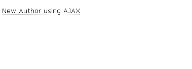
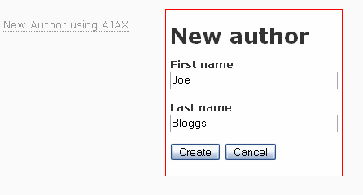
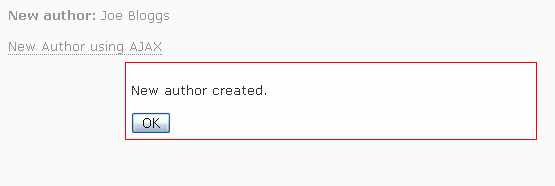
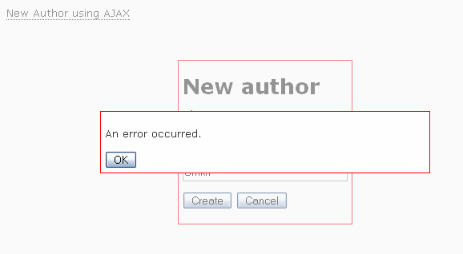
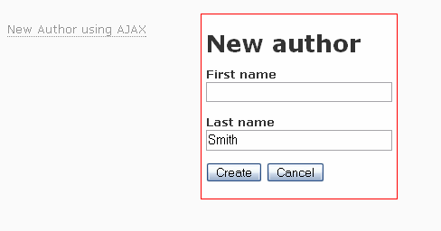

new Popup(popup, link, options);
The examples presented here were tested under Rails 1.2.1 and Ruby 1.8.5.
First off you need to put the popup script and stylesheet into your page layouts:
<%= javascript_include_tag :defaults %> <%= stylesheet_link_tag 'popup.css' %> <%= javascript_include_tag 'popup.js' %>
The javascript_include_tag :defaults includes the required Prototype and Scriptaculous libraries.
A Record Popup
In this example we generate a popup containing details of an article record stored in the Article model. The popup link looks like:
<p><span id="article_link_<%= article.id %>" class="popup_link"><%= article.title %></span></p>
<%= render :partial => 'article_popup', :locals => {:article => article} %>
The draggable auto-close popup is generated by the ./app/views/articles/_article_popup.rhtml partial:
<div id="article_popup_<%= article.id %>" class="popup popup_draghandle" style="display:none">
<p>
<b>Title:</b>
<%=h article.title %>
</p>
<p>
<b>Summary:</b>
<%=h article.summary %>
</p>
</div>
<%= javascript_tag "new Popup('article_popup_#{article.id}','article_link_#{article.id}')" %>
The new Popup JavaScript statement associates the popup contents with it's linking element. Here's a screenshot:

Creating a new Record using a modal form
It's often useful to be able to create a related record without having to leave the current page. This example uses a modal popup form to create a new author record.
Here's the click-to-open popup link to bring up the modal form:
<p><span id="new_author_link" class="popup_link">New Author</span></p> <%= render :partial => 'authors/new_author_popup' %>
Here's the ./app/views/authors/_new_author_popup.rhtml partial that renders the popup form:
<div id="new_author_popup" class="popup" style="display:none">
<h1>New author</h1>
<% form_for(:author, :url => authors_path) do |f| %>
<p>
<b>First name</b><br />
<%= f.text_field :first_name %>
</p>
<p>
<b>Last name</b><br />
<%= f.text_field :last_name %>
</p>
<p>
<%= submit_tag 'Create', :class => 'popup_closebox' %>
<%= tag :input, :type => 'button', :value => 'Cancel', :class => 'popup_closebox' %>
<%= hidden_field_tag :back, :value => request.path %>
</p>
<% end %>
</div>
<%= javascript_tag "new Popup('new_author_popup','new_author_link',{modal:true})" %>
-
The popup is created with the modal option.
-
Both the submit and cancel buttons are popup close boxes.
When the Create button is pressed the popup form closes and a and the form parameters are posted to the author controller's create action. Note how the hidden :back field is used by the author controller's create action to redirect back to the originating page.
def create
@author = Author.new(params[:author])
respond_to do |format|
if @author.save
flash[:notice] = 'Author was successfully created.'
format.html do
if params[:back]
redirect_to params[:back]
else
redirect_to author_url(@author)
end
end
format.xml { head :created, :location => author_url(@author) }
else
format.html do
if params[:back]
flash[:notice] = 'Error creating author.'
redirect_to params[:back]
else
render :action => 'new'
end
end
format.xml { render :xml => @author.errors.to_xml }
end
end
end
Creating a new Record using a modal form, AJAX and RJS templates
Here's where things get interesting — this time we submit the form using AJAX and then poke a response back into the originating page using an RJS template. The example also illustrates how to invoke modal information popups programmatically.
The click-to-open popup link on the originating page is similar to the previous example with the addition of:
-
The new_author paragraph element which is a placeholder for the server response.
-
The app/views/partials/_message_popup.rhtml partial which is an information message popup.
<p id="new_author"></p> <p><span id="new_author_using_ajax_link" class="popup_link">New Author using AJAX</span></p> <%= render :partial => 'authors/new_author_using_ajax_popup' %> <%= render :partial => 'partials/message_popup' %>
Here's the app/views/authors/_new_author_using_ajax_popup.rhtml partial that renders the popup form. Again similar to previous example but using AJAX to submit the form:
<div id="new_author_using_ajax_popup" class="popup" style="display:none">
<h1>New author</h1>
<% form_remote_for(:author, :url => authors_path,
:loading => "Element.show('popup_spinner');Form.disable('author_form');",
:complete => "Element.hide('popup_spinner');Form.enable('author_form');",
:html => {:id => 'author_form'}
) do |f| %>
<p>
<b>First name</b><br />
<%= f.text_field :first_name %>
</p>
<p>
<b>Last name</b><br />
<%= f.text_field :last_name %>
</p>
<p>
<%= submit_tag 'Create' %>
<%= tag :input, :type => 'button', :value => 'Cancel', :class => 'popup_closebox' %>
<%= image_tag 'spinner.gif', :id => 'popup_spinner', :style => 'display:none' %>
</p>
<% end %>
</div>
<%= javascript_tag "new Popup('new_author_using_ajax_popup','new_author_using_ajax_link',{modal:true})" %>
-
Note the use of :loading and :complete options to disable the form and give the user some feedback while waiting for the server response.
-
Unlike the previous non-AJAX example the Create submit button is not a popup close box — the form stays open and displays feedback until the server response arrives.
Here is the Author controller's create action, it's very similar to the previous example but in this case the response is generated by inline RJS templates:
def create
@author = Author.new(params[:author])
respond_to do |format|
if @author.save
format.html do
flash[:notice] = 'Author was successfully created.'
if params[:back]
redirect_to params[:back]
else
redirect_to author_url(@author)
end
end
format.js do
render :update do |page|
page.form.reset 'author_form'
page << "$('new_author_using_ajax_popup').popup.hide();"
page.replace_html 'new_author', "<b>New author:</b> #{@author.first_name} #{@author.last_name}"
page.visual_effect :highlight, 'new_author'
page.replace_html 'message_popup_message', 'New author created.'
page << "$('message_popup').popup.show();"
end
end
format.xml { head :created, :location => author_url(@author) }
else
format.html do
if params[:back]
flash[:notice] = 'Error creating author.'
redirect_to params[:back]
else
render :action => 'new'
end
end
format.js do
render :update do |page|
page.replace_html 'message_popup_message', 'An error occurred.'
page << "$('message_popup').popup.show();"
end
end
format.xml { render :xml => @author.errors.to_xml }
end
end
end
Because form_remote_for posts a JavaScript request it is routed to the format.js sections, then the RJS template generates JavaScript which is sent back to and executed by the waiting browser. If the new record is saved without errors then:
-
The popup form is reset and hidden.
-
The new author's name is inserted into the new_author paragraph which is then briefly highlighted.
-
The New author created modal message_popup has it's message set and is the displayed.
The last step is probably not necessary, it's just there to demonstrate how to trigger a popup from the server.
If the record cannot be saved the the user is presented with an error message an the form is left open ready for corrections and resubmission.
These screenshots illustrate sequence:

The popup form link

Modal AJAX form

Modal confirmation popup (note the updated new_author element on the background form)

The error message popup

After an error your are returned to the modal form
Here's the app/views/partials/_message_popup.rhtml partial used to create the anonymous message popup:
<div id="message_popup" class="popup" style="width:400px">
<p id="message_popup_message"></p>
<form action="">
<input class="popup_closebox" type="button" value="OK" />
</form>
</div>
<%= javascript_tag "new Popup('message_popup',null,{modal:true})" %>
-
The message Popup object is created without a link (the Popup link argument is null) because this popup is triggered programmatically by the server response and not by user interaction.
-
As with any markup, popup elements don't have to be put in separate partials, but partials are a nice reuse mechanism allowing you to use the same popup anywhere in your application.